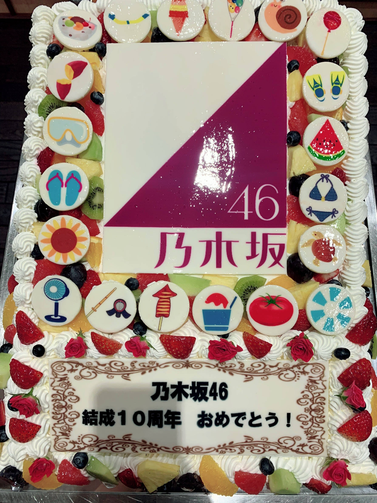
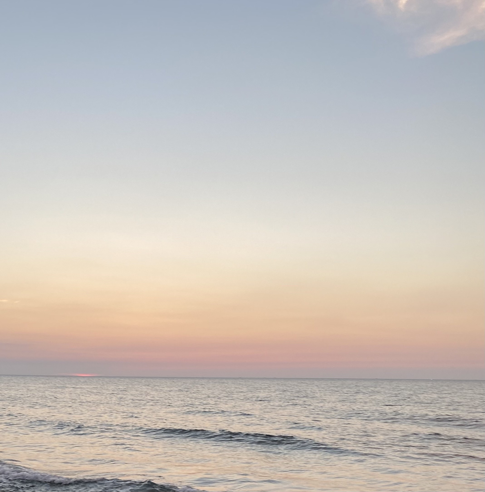
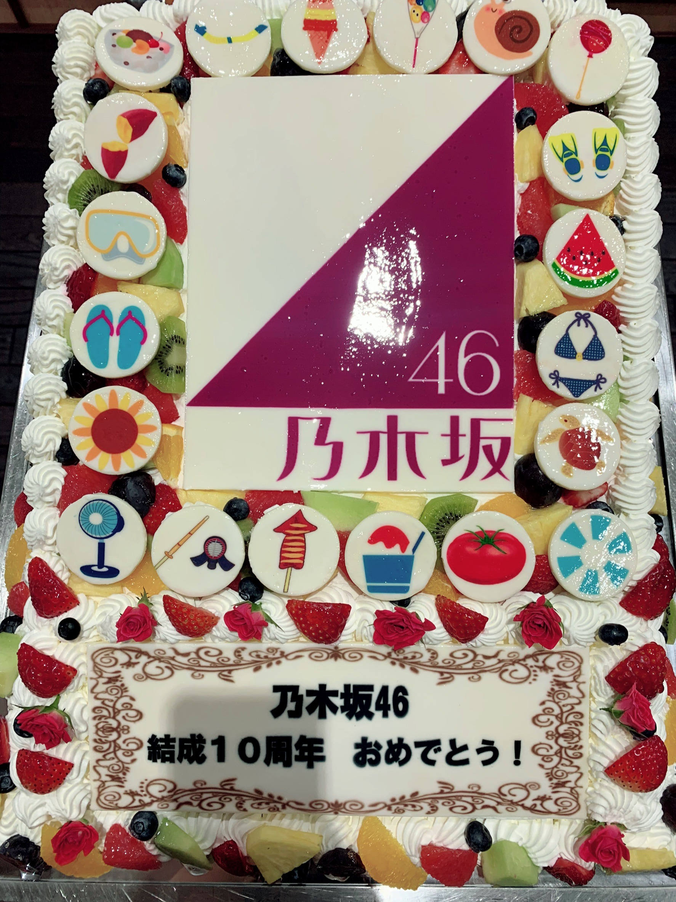
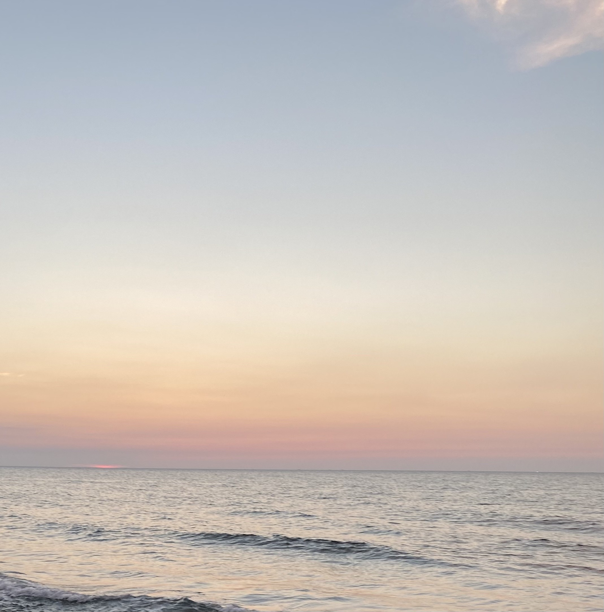

2021/0825Wedろうそく。
かきちゃんに似顔絵いつか描いて欲しいと
密かに思っていたので嬉しかったー。
2期生みんなの似顔絵凄く嬉しかったの。
しかも本当に似てた。
いつか絶対かきちゃんのお絵描き欲しい。✨
本人にも伝えたんだー。
かきちゃんを見るのが最近の癒し。
乃木坂お試し中
ライブ、ミーグリと言う題名のブログを
6月から下書き保存していたのですが
世に出すタイミングを見失い
私の思い出ブログになりそうです、、、
そしてもう8月
来月で私、お誕生日ですよ。
1年があっという間すぎて吃驚しています。
去年はInstagramをお誕生日に始めたりと
今では当たり前になっていますが1年前の
乃木坂46では考えられない事で、、、
嬉しいお知らせができて私自身も
すごく嬉しかったことを覚えています。
今年も、、、
嬉しいお知らせが、、、
ありま、、、
す。☺️✨
是非、一緒に喜んで
盛り上がってくれたら嬉しいです。☺️✨
いつも応援本当に本当にありがとうございます。
表ではなかなか見せませんが
沢山泣く事があって
沢山笑う事があって
辛い事があって寂しい事があって
それでも前を見て一歩でも踏み出さなきゃ
立ち止まる暇なんかないって感じで
今年も8月まできました。
正直体力的にも
気持ち的にも
グループ内での出来事が目まぐるしく
特に最近では同期やずっと一緒にいた大切な人達との
お別れが多過ぎて
寂しいけど本人達には前向きな事で
でも、私としては色々噛み締めたいのに
また次へと進まなきゃならなくて
もっと、時間が欲しいなーと
思う瞬間が今年は特に多い気がします。
でも、ツアー中に思った事は
私ってやっぱりアイドルに向いてるんだなって
応援してもらうと凄く元気になるのが自分でも分かるくらい皆さんからパワー貰っています。
自分のグッズやペンライトは会場の1番上の席でも
見つけられるし大きく手を振ったら気付いてくれて
喋れなくとも意思疎通できた時
何より心から笑顔になっている自分がいました。
ツアーお疲れ様でした。
無事に地方公演終えることができて良かったです。
桃子もお疲れ様ー。☺️
もちろんみんなもお疲れ様でした。☺️
本当に色々ありがとうございます。
モバメにはもっと色々書いているのですが、、、
やっぱりモバメはお友達にこれも聞いてー
この話も聞いてよーってノリで書けるので
昔から好きな場所です。
コロナや体調にはお互い気をつけて
これからも仲良くしてください。☺️✨



密かに思っていたので嬉しかったー。
2期生みんなの似顔絵凄く嬉しかったの。
しかも本当に似てた。
いつか絶対かきちゃんのお絵描き欲しい。✨
本人にも伝えたんだー。
かきちゃんを見るのが最近の癒し。
乃木坂お試し中
ライブ、ミーグリと言う題名のブログを
6月から下書き保存していたのですが
世に出すタイミングを見失い
私の思い出ブログになりそうです、、、
そしてもう8月
来月で私、お誕生日ですよ。
1年があっという間すぎて吃驚しています。
去年はInstagramをお誕生日に始めたりと
今では当たり前になっていますが1年前の
乃木坂46では考えられない事で、、、
嬉しいお知らせができて私自身も
すごく嬉しかったことを覚えています。
今年も、、、
嬉しいお知らせが、、、
ありま、、、
す。☺️✨
是非、一緒に喜んで
盛り上がってくれたら嬉しいです。☺️✨
いつも応援本当に本当にありがとうございます。
表ではなかなか見せませんが
沢山泣く事があって
沢山笑う事があって
辛い事があって寂しい事があって
それでも前を見て一歩でも踏み出さなきゃ
立ち止まる暇なんかないって感じで
今年も8月まできました。
正直体力的にも
気持ち的にも
グループ内での出来事が目まぐるしく
特に最近では同期やずっと一緒にいた大切な人達との
お別れが多過ぎて
寂しいけど本人達には前向きな事で
でも、私としては色々噛み締めたいのに
また次へと進まなきゃならなくて
もっと、時間が欲しいなーと
思う瞬間が今年は特に多い気がします。
でも、ツアー中に思った事は
私ってやっぱりアイドルに向いてるんだなって
応援してもらうと凄く元気になるのが自分でも分かるくらい皆さんからパワー貰っています。
自分のグッズやペンライトは会場の1番上の席でも
見つけられるし大きく手を振ったら気付いてくれて
喋れなくとも意思疎通できた時
何より心から笑顔になっている自分がいました。
ツアーお疲れ様でした。
無事に地方公演終えることができて良かったです。
桃子もお疲れ様ー。☺️
もちろんみんなもお疲れ様でした。☺️
本当に色々ありがとうございます。
モバメにはもっと色々書いているのですが、、、
やっぱりモバメはお友達にこれも聞いてー
この話も聞いてよーってノリで書けるので
昔から好きな場所です。
コロナや体調にはお互い気をつけて
これからも仲良くしてください。☺️✨


2021/08/25 18:54
コメント(1037)
らんぜさん、おはよう:D
「 マシンガンレイン 」センター、おめでとう！
MVめちゃくちゃ格好いいね！！ 三原色をテーマにしたのもいいし、ダンスがクールなのに綺麗です。この曲は寺田蘭世が真ん中に立つとより白色光が増すと感じました。
早くフルサイズでダンスパフォーマンスも見たいし、新たに4期生を加えたアンダー曲をひっさげ、座長 寺田蘭世のアンダーライブも有観客で出来たらいいね！
11月には写真集もあるし、個別ミーグリは無くなってしまったけど、それを補い超えるほどの楽しさと嬉しさを頂いています。
本当に本当にありがとう！！
「 マシンガンレイン 」センター、おめでとう！
MVめちゃくちゃ格好いいね！！ 三原色をテーマにしたのもいいし、ダンスがクールなのに綺麗です。この曲は寺田蘭世が真ん中に立つとより白色光が増すと感じました。
早くフルサイズでダンスパフォーマンスも見たいし、新たに4期生を加えたアンダー曲をひっさげ、座長 寺田蘭世のアンダーライブも有観客で出来たらいいね！
11月には写真集もあるし、個別ミーグリは無くなってしまったけど、それを補い超えるほどの楽しさと嬉しさを頂いています。
本当に本当にありがとう！！
蘭世さん、おはようございます
#蘭世最高で盛り上がった昨夜のTwitterはお祭り状態でしたね。もちろん私も参加しましたが沢山の蘭世さんファンの投稿を見ることができて素敵な時間でした。
アンダーセンターおめでとうございます。
昨夜のメールを見るまでは蘭世さんへおめでとうで良いのか分からない気持ちでした。
でも最近の活動の充実ぶりや今回のアンダーは特別な意味があると気付いて悔しさやモヤモヤが晴れた気がします。
４期が合流した新生アンダーの先頭に蘭世さんが立つことが嬉しい。
いろんな事を乗り越えて来た蘭世さんだからこそ、ブレない姿勢を貫き、誰より乃木坂魂に溢れた人だからこそ意味があるんだと思いました。
生まれながらのセンター気質というか…１番真ん中が似合う人。
センター曲がこんなにあって、全部が名曲で。
とても嬉しいです。
お誕生日まであと13日ですね。
毎日のひょろひょろくん通信を楽しみながらTwitter中心に応援し続けます！
#蘭世最高で盛り上がった昨夜のTwitterはお祭り状態でしたね。もちろん私も参加しましたが沢山の蘭世さんファンの投稿を見ることができて素敵な時間でした。
アンダーセンターおめでとうございます。
昨夜のメールを見るまでは蘭世さんへおめでとうで良いのか分からない気持ちでした。
でも最近の活動の充実ぶりや今回のアンダーは特別な意味があると気付いて悔しさやモヤモヤが晴れた気がします。
４期が合流した新生アンダーの先頭に蘭世さんが立つことが嬉しい。
いろんな事を乗り越えて来た蘭世さんだからこそ、ブレない姿勢を貫き、誰より乃木坂魂に溢れた人だからこそ意味があるんだと思いました。
生まれながらのセンター気質というか…１番真ん中が似合う人。
センター曲がこんなにあって、全部が名曲で。
とても嬉しいです。
お誕生日まであと13日ですね。
毎日のひょろひょろくん通信を楽しみながらTwitter中心に応援し続けます！
こんにちはっ！らんぜ(^^)
昨日は、メールありがとう(^^)d
蘭世最高！昨夜の、らんぜのインスタの投稿からの蘭世最高の企画、楽しかったよ(^^)b らんぜも楽しかったかな？そうだったならいいなぁ(^^) たくさん呟いたよ〜♪
そして、らんぜが投稿してくれたオフショット！！とっても素敵なお写真ですっごく嬉しかったョ〜(^^)！メールでらんぜがドレスと教えてくれましたね♪本当に！綺麗〜！美しいブラックのドレス姿のらんぜ！肩と首もとのレース部分が印象的ですね。とても品があってすごく素敵ならんぜのお姿でした(^^) らんぜのお顔はとっても品がありますので、特に首もとがハイな感じがよく合ってたと思います(^^)レースのあの先端とか、花模様の織り込みとかも細かく施されててて綺麗(^^)ここの部分が特に好きです♪
それから肩のレース部分に縦に付いている同色のヒラヒラとした飾りもすごく品があると思います。ここも良いなと感じましたね。
らんぜの耳飾りも個性的で目を惹かれました(^^) お写真を見たときけっこうすぐに、目を惹かれる部分ですね。正面からのらんぜのお顔のお写真では、髪を後ろに束ねているせいもあるかと思いますが、ちょうどサイドから垂らしてる髪束のようにも見えて、ヘアスタイルの一部のようにも錯覚してしまうような遊び感もありますね(^^) 独特な感じがしますけど、らんぜのお顔にとても合ってるし、このドレス姿にももう一味個性が足されるようで、すごくオシャレだなと感じました。
ちょうどこの前、らんぜがメールで、着る物に合わせて小物とか色々変えねばならぬ〜っていう言葉通り、この辺りの小物やアクセサリーの大事さが分かりますね。
素敵なドレス姿のらんぜのオフショット3枚！どうもありがとう(^^)撮ってる背景も、ドレスが見やすくわかりやすくしてあって、お顔の表情、角度も3パターン、どれもすごく素敵だったよ〜(^^)b 作品でのドレス姿がとても楽しみになるオフショットでしたよ(^^)♪
それから、ストーリーでもこのお写真を使ってとってもオシャレに遊び心のあるストーリーで、本当に素敵でした(^^)オシャレで可愛い仕上がり♪いいステッカーだよね！お写真の雰囲気によくあってる〜(^^) ストーリーってこんなふうに遊べるのが楽しいよね(^^) 心ウキウキさせてもらいましたよ〜(^^)
でですね、ストーリーのもう1枚の方。すっっごく綺麗っ！！ホントっ品があって素敵ですっ！！このお写真だいすきですっ！いや、どれもだいすきですけど^^; ボーズもとってもオシャレで品があるし、素足というのがまたこのお写真に雰囲気というかストーリーを与えてますね。そしてその素足をスカートの裾かな、レース部分が覆っていて。ここ大切なんですよ。これで品があるかないかの分かれ道。ちょっとのオテンバ感がありつつのでもとっても品がある。素敵です。ブレスレットもイイですよね♪こう見てると、これがあるのと無いのを想像してしまいますが、やっぱり小物の重要性がわかりますね。ブレスレットも素敵です。でですね、ここで、このドレスの全容がわかるじゃないですか、スカート部分のカタチがとっても良いですね。フンワリと美しく階段に広がっていて上品で可愛い。スカート部分を水玉ドットのレースが包むように覆っているのもまた素敵。
そしてこの階段の赤絨毯がまた良い場所です〜！ブラックのドレスにとっても合ってます！よりいっそう引き立ちますね、格調高く感じますね。配色の妙ってスゴい♪こうやって全体で見れると、らんぜの肩のレース部分が素敵だなって感じます。そこに先ほどの耳飾りのチャーム部分なのかな、ドレスの布装飾かな、肩に重なって見えて髪型の一部分のように錯覚させてしまうところもやはり良きです(^^)
らんぜの髪型も！素敵でしたね〜。前髪分けての毛束の、手を合わせてる方に垂れてる毛束が印象的でした。ネイルカラーも、リップの色より深い赤、ちょうどお口と位置が近くなると、こんな色の変化も大事なんだな〜って感じました。お口元もネイルもそれぞれに上品な赤で、らんぜによくあってますね(^^) そしてね、眉！この眉のラインとカラーすごく好きです！お目々のメイクともバッチシ。大人っぽさの中に、そうなりすぎない若々しさと清廉さがあって、とっても品がある。らんぜの表情も。本当に素敵です、らんぜ(^^)b
このお写真、飾りたいくらいに素敵な1枚ですね。構図とか背景にらんぜのポーズもだし。配色も良いし。とっても作品に期待をもたせるお写真でした〜。素晴らしいです。すごくすごく素敵なオフショットを、ありがとうらんぜ(^^)！
もうホントに詳しくもないのに、ただ好きなだけでバーーっ！と長々と言っちゃってホントにゴメンナサイ^^; このらんぜの作品、ホントに女の子、女性の方がとっても心ときめく作品なんじゃないかな〜、ってオフショット見てて感じるんですよね。そう思いません？ぜひこちらの出版社さんが持ってらっしゃる月刊コミック誌で紹介とかしてほしいなぁ♪って私は思っちゃいますけど(^^)
でも昨日は、新曲のこともだし、ひょろひょろくん通信でもとっても可愛いお写真あがったし(^^) らんぜに伝えたい感想が渋滞してるんです！また後であらためて書きますので、ぜひぜひ、らんぜお忙しい中とは思いますが、聞いてくだされば幸せです。。。
今日も、いっぱいの応援の気持ち、らんぜだいすきな気持ちを送ってます！らんぜ、てきどにー、てきどにっ！えいえいお(^^)d ですよー♪ワイワイ♪
じゃまた、後でね〜(^^)/
昨日は、メールありがとう(^^)d
蘭世最高！昨夜の、らんぜのインスタの投稿からの蘭世最高の企画、楽しかったよ(^^)b らんぜも楽しかったかな？そうだったならいいなぁ(^^) たくさん呟いたよ〜♪
そして、らんぜが投稿してくれたオフショット！！とっても素敵なお写真ですっごく嬉しかったョ〜(^^)！メールでらんぜがドレスと教えてくれましたね♪本当に！綺麗〜！美しいブラックのドレス姿のらんぜ！肩と首もとのレース部分が印象的ですね。とても品があってすごく素敵ならんぜのお姿でした(^^) らんぜのお顔はとっても品がありますので、特に首もとがハイな感じがよく合ってたと思います(^^)レースのあの先端とか、花模様の織り込みとかも細かく施されててて綺麗(^^)ここの部分が特に好きです♪
それから肩のレース部分に縦に付いている同色のヒラヒラとした飾りもすごく品があると思います。ここも良いなと感じましたね。
らんぜの耳飾りも個性的で目を惹かれました(^^) お写真を見たときけっこうすぐに、目を惹かれる部分ですね。正面からのらんぜのお顔のお写真では、髪を後ろに束ねているせいもあるかと思いますが、ちょうどサイドから垂らしてる髪束のようにも見えて、ヘアスタイルの一部のようにも錯覚してしまうような遊び感もありますね(^^) 独特な感じがしますけど、らんぜのお顔にとても合ってるし、このドレス姿にももう一味個性が足されるようで、すごくオシャレだなと感じました。
ちょうどこの前、らんぜがメールで、着る物に合わせて小物とか色々変えねばならぬ〜っていう言葉通り、この辺りの小物やアクセサリーの大事さが分かりますね。
素敵なドレス姿のらんぜのオフショット3枚！どうもありがとう(^^)撮ってる背景も、ドレスが見やすくわかりやすくしてあって、お顔の表情、角度も3パターン、どれもすごく素敵だったよ〜(^^)b 作品でのドレス姿がとても楽しみになるオフショットでしたよ(^^)♪
それから、ストーリーでもこのお写真を使ってとってもオシャレに遊び心のあるストーリーで、本当に素敵でした(^^)オシャレで可愛い仕上がり♪いいステッカーだよね！お写真の雰囲気によくあってる〜(^^) ストーリーってこんなふうに遊べるのが楽しいよね(^^) 心ウキウキさせてもらいましたよ〜(^^)
でですね、ストーリーのもう1枚の方。すっっごく綺麗っ！！ホントっ品があって素敵ですっ！！このお写真だいすきですっ！いや、どれもだいすきですけど^^; ボーズもとってもオシャレで品があるし、素足というのがまたこのお写真に雰囲気というかストーリーを与えてますね。そしてその素足をスカートの裾かな、レース部分が覆っていて。ここ大切なんですよ。これで品があるかないかの分かれ道。ちょっとのオテンバ感がありつつのでもとっても品がある。素敵です。ブレスレットもイイですよね♪こう見てると、これがあるのと無いのを想像してしまいますが、やっぱり小物の重要性がわかりますね。ブレスレットも素敵です。でですね、ここで、このドレスの全容がわかるじゃないですか、スカート部分のカタチがとっても良いですね。フンワリと美しく階段に広がっていて上品で可愛い。スカート部分を水玉ドットのレースが包むように覆っているのもまた素敵。
そしてこの階段の赤絨毯がまた良い場所です〜！ブラックのドレスにとっても合ってます！よりいっそう引き立ちますね、格調高く感じますね。配色の妙ってスゴい♪こうやって全体で見れると、らんぜの肩のレース部分が素敵だなって感じます。そこに先ほどの耳飾りのチャーム部分なのかな、ドレスの布装飾かな、肩に重なって見えて髪型の一部分のように錯覚させてしまうところもやはり良きです(^^)
らんぜの髪型も！素敵でしたね〜。前髪分けての毛束の、手を合わせてる方に垂れてる毛束が印象的でした。ネイルカラーも、リップの色より深い赤、ちょうどお口と位置が近くなると、こんな色の変化も大事なんだな〜って感じました。お口元もネイルもそれぞれに上品な赤で、らんぜによくあってますね(^^) そしてね、眉！この眉のラインとカラーすごく好きです！お目々のメイクともバッチシ。大人っぽさの中に、そうなりすぎない若々しさと清廉さがあって、とっても品がある。らんぜの表情も。本当に素敵です、らんぜ(^^)b
このお写真、飾りたいくらいに素敵な1枚ですね。構図とか背景にらんぜのポーズもだし。配色も良いし。とっても作品に期待をもたせるお写真でした〜。素晴らしいです。すごくすごく素敵なオフショットを、ありがとうらんぜ(^^)！
もうホントに詳しくもないのに、ただ好きなだけでバーーっ！と長々と言っちゃってホントにゴメンナサイ^^; このらんぜの作品、ホントに女の子、女性の方がとっても心ときめく作品なんじゃないかな〜、ってオフショット見てて感じるんですよね。そう思いません？ぜひこちらの出版社さんが持ってらっしゃる月刊コミック誌で紹介とかしてほしいなぁ♪って私は思っちゃいますけど(^^)
でも昨日は、新曲のこともだし、ひょろひょろくん通信でもとっても可愛いお写真あがったし(^^) らんぜに伝えたい感想が渋滞してるんです！また後であらためて書きますので、ぜひぜひ、らんぜお忙しい中とは思いますが、聞いてくだされば幸せです。。。
今日も、いっぱいの応援の気持ち、らんぜだいすきな気持ちを送ってます！らんぜ、てきどにー、てきどにっ！えいえいお(^^)d ですよー♪ワイワイ♪
じゃまた、後でね〜(^^)/
蘭世 こんにちは(^^)
まずは、アンダーセンター就任おめでとうございます！このニュースを最初に知った時、嬉しさはもちろんだけど、安心感を凄く感じたんだよね。昨日のメールでも言っていた通り、何度もセンターを経験したからこそそう感じたのかななんて。
写真集の発売まであと2ヶ月！
twitterはもちろんフォロー済みだけど、ひょろひょろ君のツイートが期待値をどんどん高めてくれて、発売が本当に待ち遠しいです。インスタの写真も凄く素敵ですね！
季節もすっかり秋らしくなりましたね。
昼夜の寒暖差もありますので、体調管理には十分気をつけて下さいね。
では、今日も一日お互い"適度に"頑張っていきましょう！
またね
まずは、アンダーセンター就任おめでとうございます！このニュースを最初に知った時、嬉しさはもちろんだけど、安心感を凄く感じたんだよね。昨日のメールでも言っていた通り、何度もセンターを経験したからこそそう感じたのかななんて。
写真集の発売まであと2ヶ月！
twitterはもちろんフォロー済みだけど、ひょろひょろ君のツイートが期待値をどんどん高めてくれて、発売が本当に待ち遠しいです。インスタの写真も凄く素敵ですね！
季節もすっかり秋らしくなりましたね。
昼夜の寒暖差もありますので、体調管理には十分気をつけて下さいね。
では、今日も一日お互い"適度に"頑張っていきましょう！
またね
写真集公式Twitterでひょろひょろくん通信上がってたあ！
黒のドレスがよく似合う事！アクセサリーは私物やってんね。
センス良すぎやな蘭世ちゃん
まさに乃木坂のファッションリーダー的存在ですね
やぁ(^o^)丿最愛なる蘭世
今日はまた暑い日になったな～
雨がやむと暑くなる。
まだ残暑ですか～！！
ひょろひょろくん通信見たで(´▽｀)
めちゃくちゃ美しいわ。
リアクションは可愛いわでもうハートがドクンドクンや！笑笑
ヘアーアレンジの説明も良いしまた髪型も良かった。
私物も取り入れて良い感じやな(´▽｀)
H&Mで買ったやつなんや、ええと思うでプチプラ大事！
アクセサリーは高い物を付ければいいってわけではないからな。
自分が気に入った物を付けるのがええからな。
お洒落で俺は最高にかっこいい女性に改めて惚れたんやなって感じたわ。
今日もTwitter更新ありがとうな。
今日まぁブログコメントにも似たようなことは書いてるけど、ちゃんと自分の手で書いた文字で送りたかったらお手紙送ったでいつ届くかはわからないけど、また読んだって。
読みにくい字かもしれんけどそれは堪忍な(´▽｀)
きっとまた後で(^o^)丿
蘭世お疲れ様！
今日はいい天気ですね！暑いですが
マシンガンレインめっちゃかっこいいです！
特に間奏が好きすぎて何回もリピートしてます！笑
今日も頑張ろう！
今日はいい天気ですね！暑いですが
マシンガンレインめっちゃかっこいいです！
特に間奏が好きすぎて何回もリピートしてます！笑
今日も頑張ろう！
蘭世さん、おめでとう!
秋は情熱の雨が降りそそぐぜ!
秋は情熱の雨が降りそそぐぜ!
やっほー
センターおめでとう！！
また良い曲もらえたね
衣装も綺麗で良き
いっぱい聴くね
またねー
センターおめでとう！！
また良い曲もらえたね
衣装も綺麗で良き
いっぱい聴くね
またねー
メールありがと！
携帯落としても無傷なのはラッキーね。
幸運おすそわけありがと◯
パパかわいいし、そんなパパをかわいいでしょって
言う娘もかわいい☺️
こちらもしあわせな雰囲気で包まれております。
携帯落としても無傷なのはラッキーね。
幸運おすそわけありがと◯
パパかわいいし、そんなパパをかわいいでしょって
言う娘もかわいい☺️
こちらもしあわせな雰囲気で包まれております。
09日未反映分
(*・ｪ･*)ﾉ～☆ｺﾝﾊﾞﾝﾜ♪最愛なる蘭世
おかえり、今日も一日お疲れさま。
9日も終わる～(^-^)
今日は最高の日だったな～(^-^)
ホンマ蘭世
大変なことの方が多いお仕事やと思うし。
プレッシャーだって沢山あると思う。
人に見られるって仕事は体力もそうやけど精神的にもきつい仕事やと思うからな。
それでずっと続けてきてるんやから。
蘭世
トレンド入ってたみたいやで(^-^)
インスタも更新ありがとうな！
ドレスのオフショットマジで最高過ぎる！
何ですかあの美人さ！！！
一枚目のあの角度！！
もう好き過ぎる！(^-^)
二枚目は真っ直ぐカメラを見てもう照れちゃう( *´艸｀)
三枚目は一枚目と似てるけど、ちょっと顎が上がってて見降ろしてる感じもええな(^-^)
ストーリーも更新ありがとうな。
一個目でおやすみって思ってたら
二個目来たやんか～笑笑
しかも階段で赤い絨毯みたいなのひかれてるし！
なんか高貴な感じ！！
しかもそこに素足でいるのがまたいい。
蘭世
この時傍で見たかった。
今日はぐっすり寝れるわ。
という事でこの辺で今日はおやすみを。
I’m in my bed, you’re in your bed. One of us is in the wrong place. Good night My Honey Angel.
きっとまた明日も笑顔で(^-^)
自分の娘の活躍がパパにとっては最高に嬉しいんだと思うよ
蘭世ちゃんからのモバメはいつもほのぼのして幸せな気持ちにしてくれるね。特に家族ネタは大好き
家族皆んなで蘭世ちゃんを応援してくれてるの良いね
蘭世さんこんばんは！
昨日コメントできなくてごめんなさい。
マシンガンレインのセンターおめでとうございます！！
MVを観たけど、かっこいい曲だしダンスも素敵でした！
そしてInstagramでのオフショットありがとうございます！！
黒いドレスの蘭世さんが素敵すぎました！
かわいいとかっこいいが共存している蘭世さんが大好きです！！
蘭世最高！！
今日もメールありがとうございます！
携帯落としたのに無傷だったのは良かったです！
蘭世パパかわいいですね！
優しくて熱い気持ちを持ったパパも素敵です(^ ^)
今日も一日お疲れ様でした！
明日も適度に頑張っていきましょう！
えいえいおー！！
昨日コメントできなくてごめんなさい。
マシンガンレインのセンターおめでとうございます！！
MVを観たけど、かっこいい曲だしダンスも素敵でした！
そしてInstagramでのオフショットありがとうございます！！
黒いドレスの蘭世さんが素敵すぎました！
かわいいとかっこいいが共存している蘭世さんが大好きです！！
蘭世最高！！
今日もメールありがとうございます！
携帯落としたのに無傷だったのは良かったです！
蘭世パパかわいいですね！
優しくて熱い気持ちを持ったパパも素敵です(^ ^)
今日も一日お疲れ様でした！
明日も適度に頑張っていきましょう！
えいえいおー！！
蘭世ちゃん、こんばんは！携帯が無事で、よかったです。メール、ありがとう。可愛くて、素敵なパパ。敬意を込めて、お父様と呼びたいです。明日は、東京国立博物館の表慶館に行きます。そう、あの乃木坂46の！グッズでは、蘭世ちゃんのポストカードがお目当てです。(^-^)
今インスタストーリー上げてくれたあ！ドレス姿のオフショットだね(^^)
黒のドレスもよく似合ってるよなあ。微笑んだ横顔がめっちゃ可愛い
蘭世さん、５つ目のセンター曲ゲットおめでとう！
ＭＶの多彩な映像は寺田蘭世！って感じがします！
蘭世さんが真ん中に立ってると心が湧きます！
ライブなどで披露するのが楽しみです！
ＭＶの多彩な映像は寺田蘭世！って感じがします！
蘭世さんが真ん中に立ってると心が湧きます！
ライブなどで披露するのが楽しみです！
ぜー！
こんばんは！
本日もお疲れ様です！
モバメ、インスタ、Twitter！
ありがとうございます！
えっ、、
携帯がご無事で良かったです！
後日壊れることが無いように祈っています！
可愛いエピソードですね！
今後もこのようになるよう頑張ります！
明日も頑張りましょう！！(^-^)v
えいえいおー！！
誕生日まで14日！！
ぜーの勢い…
とまらんぜーーー！！！
No.1031
こんばんは！
本日もお疲れ様です！
モバメ、インスタ、Twitter！
ありがとうございます！
えっ、、
携帯がご無事で良かったです！
後日壊れることが無いように祈っています！
可愛いエピソードですね！
今後もこのようになるよう頑張ります！
明日も頑張りましょう！！(^-^)v
えいえいおー！！
誕生日まで14日！！
ぜーの勢い…
とまらんぜーーー！！！
No.1031
今日も一日お疲れ様〜！
メールにインスタにありがとうー！
Twitterのほうも見させていただきましたー！
昨日のトレンドはずっと蘭世ちゃんが独占してましたね〜
とってもとっても楽しい時間をありがとうございましたー！
なかなか会うことが難しい今だけど、こうやって心を一つにしてなにか成し遂げるのすごく楽しいです！
これからもぜひ続けてねー！
らんぜちゃん、おしゃれだし、かわいいし、とっても優しい！それでいて情熱的！
ママとパパの良いとこ取りなんだねー！らんぜパパかわいいね！
ママやパパ、妹ちゃんに、弟くん、たくさんの大切な人がいると思います！
これからもたくさんの愛を伝えてね！
携帯さん、無事で何よりです！
大切な思い出も入ってるだろうから、壊れちゃったら大変よー！
気をつけてねー！
指輪やイヤリング、ブレスレット、アクセサリーまでこだわりを持っているのすごく素敵です
いつか自分も蘭世ちゃんのように、自分の表現したいものをお洋服やお絵描き、歌声なんかで表現出来たら ってすごく尊敬です！
ってすごく尊敬です！
みんなの前に立つお仕事をしているとどうしても誰かと比べられたり、競争を煽られたりするかもしれないけれど、これからも これが私
これが私 私は私ってスタイルで自信もっていてよねー、！
私は私ってスタイルで自信もっていてよねー、！
いつも本当に輝いていて、憧れだし、唯一無二です
これからも応援しているよー！
ではでは！また遊びに来ます！
メールにインスタにありがとうー！
Twitterのほうも見させていただきましたー！
昨日のトレンドはずっと蘭世ちゃんが独占してましたね〜
とってもとっても楽しい時間をありがとうございましたー！
なかなか会うことが難しい今だけど、こうやって心を一つにしてなにか成し遂げるのすごく楽しいです！
これからもぜひ続けてねー！
らんぜちゃん、おしゃれだし、かわいいし、とっても優しい！それでいて情熱的！
ママとパパの良いとこ取りなんだねー！らんぜパパかわいいね！
ママやパパ、妹ちゃんに、弟くん、たくさんの大切な人がいると思います！
これからもたくさんの愛を伝えてね！
携帯さん、無事で何よりです！
大切な思い出も入ってるだろうから、壊れちゃったら大変よー！
気をつけてねー！
指輪やイヤリング、ブレスレット、アクセサリーまでこだわりを持っているのすごく素敵です
いつか自分も蘭世ちゃんのように、自分の表現したいものをお洋服やお絵描き、歌声なんかで表現出来たら
みんなの前に立つお仕事をしているとどうしても誰かと比べられたり、競争を煽られたりするかもしれないけれど、これからも
いつも本当に輝いていて、憧れだし、唯一無二です
これからも応援しているよー！
ではでは！また遊びに来ます！
今日も一日お疲れ様〜！
メールにインスタにありがとうー！
Twitterのほうも見させていただきましたー！
昨日のトレンドはずっと蘭世ちゃんが独占してましたね〜
とってもとっても楽しい時間をありがとうございましたー！
なかなか会うことが難しい今だけど、こうやって心を一つにしてなにか成し遂げるのすごく楽しいです！
これからもぜひ続けてねー！
らんぜちゃん、おしゃれだし、かわいいし、とっても優しい！それでいて情熱的！
ママとパパの良いとこ取りなんだねー！らんぜパパかわいいね！
ママやパパ、妹ちゃんに、弟くん、たくさんの大切な人がいると思います！
これからもたくさんの愛を伝えてね！
携帯さん、無事で何よりです！
大切な思い出も入ってるだろうから、壊れちゃったら大変よー！
気をつけてねー！
指輪やイヤリング、ブレスレット、アクセサリーまでこだわりを持っているのすごく素敵です
いつか自分も蘭世ちゃんのように、自分の表現したいものをお洋服やお絵描き、歌声なんかで表現出来たらってすごく尊敬です！
みんなの前に立つお仕事をしているとどうしても誰かと比べられたり、競争を煽られたりするかもしれないけれど、これからもこれが私私は私ってスタイルで自信もっていてよねー、！
いつも本当に輝いていて、憧れだし、唯一無二です
これからも応援しているよー！
ではでは！また遊びに来ます！
メールにインスタにありがとうー！
Twitterのほうも見させていただきましたー！
昨日のトレンドはずっと蘭世ちゃんが独占してましたね〜
とってもとっても楽しい時間をありがとうございましたー！
なかなか会うことが難しい今だけど、こうやって心を一つにしてなにか成し遂げるのすごく楽しいです！
これからもぜひ続けてねー！
らんぜちゃん、おしゃれだし、かわいいし、とっても優しい！それでいて情熱的！
ママとパパの良いとこ取りなんだねー！らんぜパパかわいいね！
ママやパパ、妹ちゃんに、弟くん、たくさんの大切な人がいると思います！
これからもたくさんの愛を伝えてね！
携帯さん、無事で何よりです！
大切な思い出も入ってるだろうから、壊れちゃったら大変よー！
気をつけてねー！
指輪やイヤリング、ブレスレット、アクセサリーまでこだわりを持っているのすごく素敵です
いつか自分も蘭世ちゃんのように、自分の表現したいものをお洋服やお絵描き、歌声なんかで表現出来たら
みんなの前に立つお仕事をしているとどうしても誰かと比べられたり、競争を煽られたりするかもしれないけれど、これからも
いつも本当に輝いていて、憧れだし、唯一無二です
これからも応援しているよー！
ではでは！また遊びに来ます！
蘭世ちゃん、お疲れ様！
今日もメールを送ってくれて有難う！
携帯を落としたり心配することはありますが蘭世ちゃんの携帯が無傷で本当によかったです^-^
昨日みんなで＃蘭世最高で呟くのが楽しかったです１
そして蘭世パパのエピゾードも有難う。
優しさと熱量は本当に蘭世ちゃんに似ているですね^-^
そしていちいち反動したりする蘭世パパが本当に可愛いです！
明日も忙しい知日ですがお互い無理せずに頑張ろうね！
今日もメールを送ってくれて有難う！
携帯を落としたり心配することはありますが蘭世ちゃんの携帯が無傷で本当によかったです^-^
昨日みんなで＃蘭世最高で呟くのが楽しかったです１
そして蘭世パパのエピゾードも有難う。
優しさと熱量は本当に蘭世ちゃんに似ているですね^-^
そしていちいち反動したりする蘭世パパが本当に可愛いです！
明日も忙しい知日ですがお互い無理せずに頑張ろうね！
蘭世さん、お疲れ様です。
メールにインスタ、Twitterの更新、今日もありがとう。
ひょろひょろくん通信、今日は解説動画でしたね。
解説が聞けてとても嬉しかったよ。ありがとう。
髪型、アミアミなのは解説が無ければわからなかった。
すごく可愛かったし、後ろ姿が綺麗でした。
インスタでもおっしゃっていましたが、アクセサリーの99.9%私物は凄いよ。
プチプラでも組み合わせ方次第で高貴なもの魅せることができる、本当に勉強になります。
ファッションは値段ではなく、自分のこれだ！という感覚が大事ですね。
こういう細かいところを直の声を通して見れるのが動画の良いところだね。
お話をしている蘭世さんにも癒されるし、幸せの玉手箱でした。
(人''▽｀)ありがとう☆
メールについて。
画面が割れなくて、携帯が壊れなくて良かったよ
蘭世さんはお人柄が良いし、日々の行いも良いから運も味方したんですよ。
優しくて熱いお父様、素敵で可愛らしいですね。
蘭世さんの優しさと熱さは、素敵な遺伝だね。
蘭世さんのご家族は、あたたかくて素敵だなぁー。
これからも大切にね。
お父様も喜んでいるのならより一層これからも盛り上げていかねばですね。
頑張りますよ
インスタストーリーのオフショット、雑誌の1ページにあっても良い写真だよ。
お姫様感があって、きれかわで良きです
今日も素敵なショットをありがとう。
明日も適度に頑張っていこうね
えいえいおーだ！
明日もいい日だ
またね。
メールにインスタ、Twitterの更新、今日もありがとう。
ひょろひょろくん通信、今日は解説動画でしたね。
解説が聞けてとても嬉しかったよ。ありがとう。
髪型、アミアミなのは解説が無ければわからなかった。
すごく可愛かったし、後ろ姿が綺麗でした。
インスタでもおっしゃっていましたが、アクセサリーの99.9%私物は凄いよ。
プチプラでも組み合わせ方次第で高貴なもの魅せることができる、本当に勉強になります。
ファッションは値段ではなく、自分のこれだ！という感覚が大事ですね。
こういう細かいところを直の声を通して見れるのが動画の良いところだね。
お話をしている蘭世さんにも癒されるし、幸せの玉手箱でした。
(人''▽｀)ありがとう☆
メールについて。
画面が割れなくて、携帯が壊れなくて良かったよ
蘭世さんはお人柄が良いし、日々の行いも良いから運も味方したんですよ。
優しくて熱いお父様、素敵で可愛らしいですね。
蘭世さんの優しさと熱さは、素敵な遺伝だね。
蘭世さんのご家族は、あたたかくて素敵だなぁー。
これからも大切にね。
お父様も喜んでいるのならより一層これからも盛り上げていかねばですね。
頑張りますよ
インスタストーリーのオフショット、雑誌の1ページにあっても良い写真だよ。
お姫様感があって、きれかわで良きです
今日も素敵なショットをありがとう。
明日も適度に頑張っていこうね
えいえいおーだ！
明日もいい日だ
またね。
らんぜさんおはようこんにちはこんばんは！
それは災難でしたがらんぜさんの携帯もタフだったようですね！
良いパパさんですね！
らんぜさんの御家族話にはいつもほっこりします^ ^
まだ2ヶ月ありますので、色々企画して盛り上げていきましょう\ʕ•ᴥ•ʔ
インスタの更新もありがとうございます
華やかなホテルの雰囲気に黒ドレスのらんぜさんが映えます^ ^
相変わらずお買い物上手ですね！是非見習いたいな、、
公式Twitterにも続々と動画があがっていますが、本当に楽しそうにしてらっしゃいますね。
スタッフさんとの雰囲気も微笑ましいです
明日も程々にがんばりましょー！
それは災難でしたがらんぜさんの携帯もタフだったようですね！
良いパパさんですね！
らんぜさんの御家族話にはいつもほっこりします^ ^
まだ2ヶ月ありますので、色々企画して盛り上げていきましょう\ʕ•ᴥ•ʔ
インスタの更新もありがとうございます
華やかなホテルの雰囲気に黒ドレスのらんぜさんが映えます^ ^
相変わらずお買い物上手ですね！是非見習いたいな、、
公式Twitterにも続々と動画があがっていますが、本当に楽しそうにしてらっしゃいますね。
スタッフさんとの雰囲気も微笑ましいです
明日も程々にがんばりましょー！
蘭世～おはよう～
元気か？スマホ大丈夫か？
台北の誠（チェン）です
昨日早朝にバタバタで
コメント書いて、
その後もバタバタ
パパもトレンドに
盛り上がって面白かった！
笑、私はこの前に書いた
きっと世の中に蘭世パパより
蘭世のことを大事してる人が
いないと思ってるよ！
その反応想像できる ^_^
素敵な家族だと思ってる
多分、蘭世は私との会話感じれる
私は家族との記憶少ないので
蘭世と話し合って
いろいろ教えてくれた時
私はすごく嬉しくて興味津々
寂しくないよ～ほんとう ^_^
いつも楽しい～～～
もっと蘭世からぶつけてくれてほしい
何もキャッチできると思うよ
いつも蘭世のこと
もっとわかりたいと思ってる
他の人のように熱く見えないけど
ずっと蘭世を守ってたいと思ってるよ
そいえば、最近
私は、いろんな国の方と
やりとりの機会多くて
すごく楽しかったよ
もちろん、
英語や日本語や中国語の間
ずっと切り替えてる
相手に合わせるね
写真集twitterとインスタ見たよ
何か、蘭世は全部屋を
外に持ち出したみたい
ジョークやけど、笑
いつも蘭世の
アクセサリとかにも興味津々
服部屋作ってあげたいね ^_^
写真集いろいろ楽しみよ～～～
歩いて、コンビニに行く小道
すすきみたいな小さい草見て
蘭世のことおもいづいた
蘭世はそのような草に近づかないでね
昨夜、サバの塩焼き食べた ^_^
今日も一緒に頑張ろうね
蘭世と蘭世の家族との安全と
健康をずっと願ってる ^_^
ばい～また～
2021.09.11 05：15
元気か？スマホ大丈夫か？
台北の誠（チェン）です
昨日早朝にバタバタで
コメント書いて、
その後もバタバタ
パパもトレンドに
盛り上がって面白かった！
笑、私はこの前に書いた
きっと世の中に蘭世パパより
蘭世のことを大事してる人が
いないと思ってるよ！
その反応想像できる ^_^
素敵な家族だと思ってる
多分、蘭世は私との会話感じれる
私は家族との記憶少ないので
蘭世と話し合って
いろいろ教えてくれた時
私はすごく嬉しくて興味津々
寂しくないよ～ほんとう ^_^
いつも楽しい～～～
もっと蘭世からぶつけてくれてほしい
何もキャッチできると思うよ
いつも蘭世のこと
もっとわかりたいと思ってる
他の人のように熱く見えないけど
ずっと蘭世を守ってたいと思ってるよ
そいえば、最近
私は、いろんな国の方と
やりとりの機会多くて
すごく楽しかったよ
もちろん、
英語や日本語や中国語の間
ずっと切り替えてる
相手に合わせるね
写真集twitterとインスタ見たよ
何か、蘭世は全部屋を
外に持ち出したみたい
ジョークやけど、笑
いつも蘭世の
アクセサリとかにも興味津々
服部屋作ってあげたいね ^_^
写真集いろいろ楽しみよ～～～
歩いて、コンビニに行く小道
すすきみたいな小さい草見て
蘭世のことおもいづいた
蘭世はそのような草に近づかないでね
昨夜、サバの塩焼き食べた ^_^
今日も一緒に頑張ろうね
蘭世と蘭世の家族との安全と
健康をずっと願ってる ^_^
ばい～また～
2021.09.11 05：15
「マシンガンレイン」のMV撮影でね、4期生がアンダーメンバーに合流したでしょ。「蘭世さんが1人でステージで踊ってる姿を何度も見返してます」とブログに書いてるメンバーもいるのよ(^^) 多分蘭世ちゃんは他のメンバーのブログを見てると思うけど嬉しいよね。 尊敬されたらプレッシャーにもなるかもしれないけどモチベーションアップにも繋がるんじゃないかな
インスタとかでも卒業したメンバーが蘭世ちゃんの事書いてくれてると僕も自分のことのように嬉しくなるんよ。
写真集のオフショットまだまだ沢山ありそうだね。報告楽しみに待ってるよ
おはよう！(´▽｀)
最愛なる蘭世
今日も元気に朝を迎えれた事に感謝。
今日も蘭世
11日の始まりだ！！！
今日がもう土曜日っというな早いわ。
そして昨日のおやすみコメも反映されてない…
また反映されないコメが増えてきたな…
何だろうこの定期的に来る反映されない時期笑笑
まぁ書き直してまた書けばいいんだけど…笑
あ、昨日のストーリーにコメも更新ありがとう！
ピアスが安いのと写真集に出てくるアクセが99.9％私物ってまたすごいな(´▽｀)
どこかでつけてたのかまた探したり思い出したりするのが楽しそうや笑
蘭世
てか話は変わるけど。
すごいリアルな夢を見た、蘭世
起きたときにすごく夢であることに残念だって思った…正夢になって欲しいわ…笑
さてそれじゃ今日も無理なく怪我無く健康安全第一で一日を大切に過ごそう！
今日も出会う方々や頂けるお仕事に感謝して初心を忘れずに楽しんで笑顔で居られる日にしよう。
産んで育ててくれた御両親にも常に感謝を…
じゃきっとまた後で(´▽｀)
いってらっしゃい！
おはよー
今日も1日がんばろうね
携帯落とさないように気をつけてねー
今日も1日がんばろうね
携帯落とさないように気をつけてねー
おはよう
コロナ禍で職を失いました
もう、ダメか、、、
と、落ち込んだけど
蘭世ちゃんからの
笑顔で元気を貰いました
ありがとう
がんばるぞー！
コロナ禍で職を失いました
もう、ダメか、、、
と、落ち込んだけど
蘭世ちゃんからの
笑顔で元気を貰いました
ありがとう
がんばるぞー！
らんぜ〜♪
おはようっ！
9月に入りましたね
体調はお変わりないでしょうか？
どうでもいい話をします
ずっきゅん依存症は
届いたモバメを寝る前に確認していく
という話を以前にしたかと
思うのですが、、、
頂いたモバメを最新のものから
順に読んでいきます
なので、もし質問やクイズのような
メールをくれていたら
答えから見てしまうのです
メンバーの一日を逆に辿っていく感じです
おやすみメールから始まり
おはようメールを見て眠りにつきます
だからどうしたと言われれば
どうもしないのですが
なんとなくその方がメールの内容を
よく覚えてる気がします
気のせいですね
最近、絵を買いました
イラストレーターの大志さんという方の絵で
どことなくエドワード･ゴーリーを
彷彿とさせる素敵な作品です
そうそう、ずっきゅん依存症は
手術をするときに術衣のアンダーに
メンバーの生誕T-shirtを着用しています
こんな医者、ずっきゅん依存症だけですが、
なんかメンバーからパワーを貰える
気がするのです٩(｡•̀ω•́｡)وｴｲｴｲｵｰ!
おはようっ！
9月に入りましたね
体調はお変わりないでしょうか？
どうでもいい話をします
ずっきゅん依存症は
届いたモバメを寝る前に確認していく
という話を以前にしたかと
思うのですが、、、
頂いたモバメを最新のものから
順に読んでいきます
なので、もし質問やクイズのような
メールをくれていたら
答えから見てしまうのです
メンバーの一日を逆に辿っていく感じです
おやすみメールから始まり
おはようメールを見て眠りにつきます
だからどうしたと言われれば
どうもしないのですが
なんとなくその方がメールの内容を
よく覚えてる気がします
気のせいですね
最近、絵を買いました
イラストレーターの大志さんという方の絵で
どことなくエドワード･ゴーリーを
彷彿とさせる素敵な作品です
そうそう、ずっきゅん依存症は
手術をするときに術衣のアンダーに
メンバーの生誕T-shirtを着用しています
こんな医者、ずっきゅん依存症だけですが、
なんかメンバーからパワーを貰える
気がするのです٩(｡•̀ω•́｡)وｴｲｴｲｵｰ!
蘭世さんおはようございます✨
まずは蘭世さん、アンダーセンターおめでとうございます✨
まずはこれだけを伝えたいです。^_^
選抜に入らなかった事はすごく悔しいけど、
その後に写真集発売発表、
その後に続いてくるアンダーセンター発表、
写真集もかなり嬉しかった上に、
さらにアンダーセンターっていう嬉しいお知らせもあったとは本当に蘭世ちゃんを推してて幸せだなって心から感じています。
コメントが遅くなってごめんなさい。
というより、昨日と一昨日で3回もコメント書いたんです。
ですがその心を込めて書いた3つとも反映されなくて、
蘭世ちゃんに届けたい思いが届かなくてもどかしいのでまずは短くても「嬉しい」って事だけを伝えるね！
今日も一日頑張りましょう。^_^
えいえいおー！りょう
まずは蘭世さん、アンダーセンターおめでとうございます✨
まずはこれだけを伝えたいです。^_^
選抜に入らなかった事はすごく悔しいけど、
その後に写真集発売発表、
その後に続いてくるアンダーセンター発表、
写真集もかなり嬉しかった上に、
さらにアンダーセンターっていう嬉しいお知らせもあったとは本当に蘭世ちゃんを推してて幸せだなって心から感じています。
コメントが遅くなってごめんなさい。
というより、昨日と一昨日で3回もコメント書いたんです。
ですがその心を込めて書いた3つとも反映されなくて、
蘭世ちゃんに届けたい思いが届かなくてもどかしいのでまずは短くても「嬉しい」って事だけを伝えるね！
今日も一日頑張りましょう。^_^
えいえいおー！りょう
おはようございます。らんぜ(^^)
台風が沖縄に近づいて来てるみたいですね。まだ進路がはっきりしないようなので、要注意しとかないとですね^^;
昨日は！メールありがとう(^^)d
ケータイ、だ、、大丈夫だったかな、そんな高い所からなの！？ちゃんと問題なく動いてる！？外見ももちろんだけど中身も心配だね、、
らんぜ、お時間ある時に大事なメモとか、メールとか、ブログの下書きとかちゃんとバックアップを取っといたほうがいいよ(^^)b お写真もね。特にらんぜの大事な大事な自撮りのお写真は！
運が、そうだね、、そんな高いとこから落として助かったって事は、少しだけ、、いいのかもしれない、うん。その運の種を大切に大切に育てていこうね(^^) 可愛い運の種を大事に大事にヨシヨシしてあげましょう(^^)らんぜの大切な大切な、運の種(^^) 一緒に一緒に守っていきましょうね(^^)b
パパさん！ケータイ使いこなしてるんだね！アプリも使いこなしてるんだね！すごい、、らんぜのパパさん若いな！
中々、世の中には、娘さんの事に無関心を装うパパさんも多いと聞きますが、らんぜのパパさん素敵ですね(^^)♪うん、とっても可愛いと思います(^^)b なおみさんのように。そうですっ！私もそう思ってますよ(^^)らんぜ、なおみさんのインスタ見てますか？楽しいですよね♪お菓子食べながら話してたり(^^) のんびりと一緒に時を過ごせますよね♪ユーモアのセンスがホント素敵なんですよね(^^) ご自身の内面にあったカラーを深く出されるようになってからいっそう感じますよね。
それがさらに、インスタっていうツールでコミュニケーションを通して、私達に直に届く触れられるというのが、ほんとに素晴らしい。
らんぜの素敵なインスタも一歩一歩、歩んでいきましょう(^^)b ご家族の皆さんもあったかく見つめてる蘭世のインスタ、世界中の人に見てもらおう！RANZEって響きがもう国際的なんだもん♪ご両親がらんぜって命名したのって、なんかそういう巡りあわせよ。きっと。
パパさん、なおみさんのインスタもチェックしてるんだね！やっぱ若いわ〜！そう思わない！？らんぜ。パパさんも、ママさんも、妹さんも弟さんも、らんぜのファミリの皆さんが喜んでたり、嬉しがってたりしてたら、なんかとっても嬉しいです。心がポカポカして、ちょっと目がいたくなっちゃう、、らんぜはママさんの素敵なところもパパさんの素敵なところも、しっかり受け継いでるみたいで、本当に素晴らしいよ。らんぜはとってもとっても素敵な人なんですから。らんぜっていう、人、が私はとてもだいすきで、尊敬しています。このご縁があったことが本当に嬉しいです。
ぬあ！昨夜、らんぜインスタもストーリーあげてくれたね！みたよー！その感想も早く伝えたいんですけど、その前日のひょろひょろくん通信の、あのひょろひょろくんがカフェオレでひと休みしてるお写真、らんぜ見たー！？もぅっ！とっっても可愛くて目からハート出ちゃった！ツイッタのひょろひょろくんにお菓子を差し入れしちゃったよ(^^)絵文字なんだけど^^; そのひょろひょろくん通信も、昨日またとっても素敵な動画情報を！それも一昨日のらんぜがあげてくれたオフショットストーリーと連動してて、すっごく興味深く観させてもらいました(^^)b
また、その感想など色々書きますので、ぜひぜひ聞いてください！
らんぜの大切な可愛い運を、ローソクの炎のように、しっかりしっかりと守って、今日も1日をらんぜの素敵な1日になるように、応援の息吹を送ってるからね。らんぜのご家族の皆さま、おともだちの皆さま、私たちファン、インスタの向こうにいる海外のらんぜのフォロワーさん、ひょろひょろくん、みんならんぜのことたくさん沢山見守ってるから(^^)b
そして、そして！引き続き、らんぜの作品がらんぜの要望とテーマに沿った、素敵な作品となりますように。それも変わらぬ熱量で1日1日、熱く応援してます。らんぜのご家族さまにとっての宝となりますように。そんな温かくて誇りある作品となりますように。私は祈っています。ひょろひょろくんと制作スタッフさまもどうか、宜しくお願いいたします。いつも、そんな想いでいます。
じゃ！また後で書きますね(^^)/〜
ごきげんよう。らんぜ(^^)
台風が沖縄に近づいて来てるみたいですね。まだ進路がはっきりしないようなので、要注意しとかないとですね^^;
昨日は！メールありがとう(^^)d
ケータイ、だ、、大丈夫だったかな、そんな高い所からなの！？ちゃんと問題なく動いてる！？外見ももちろんだけど中身も心配だね、、
らんぜ、お時間ある時に大事なメモとか、メールとか、ブログの下書きとかちゃんとバックアップを取っといたほうがいいよ(^^)b お写真もね。特にらんぜの大事な大事な自撮りのお写真は！
運が、そうだね、、そんな高いとこから落として助かったって事は、少しだけ、、いいのかもしれない、うん。その運の種を大切に大切に育てていこうね(^^) 可愛い運の種を大事に大事にヨシヨシしてあげましょう(^^)らんぜの大切な大切な、運の種(^^) 一緒に一緒に守っていきましょうね(^^)b
パパさん！ケータイ使いこなしてるんだね！アプリも使いこなしてるんだね！すごい、、らんぜのパパさん若いな！
中々、世の中には、娘さんの事に無関心を装うパパさんも多いと聞きますが、らんぜのパパさん素敵ですね(^^)♪うん、とっても可愛いと思います(^^)b なおみさんのように。そうですっ！私もそう思ってますよ(^^)らんぜ、なおみさんのインスタ見てますか？楽しいですよね♪お菓子食べながら話してたり(^^) のんびりと一緒に時を過ごせますよね♪ユーモアのセンスがホント素敵なんですよね(^^) ご自身の内面にあったカラーを深く出されるようになってからいっそう感じますよね。
それがさらに、インスタっていうツールでコミュニケーションを通して、私達に直に届く触れられるというのが、ほんとに素晴らしい。
らんぜの素敵なインスタも一歩一歩、歩んでいきましょう(^^)b ご家族の皆さんもあったかく見つめてる蘭世のインスタ、世界中の人に見てもらおう！RANZEって響きがもう国際的なんだもん♪ご両親がらんぜって命名したのって、なんかそういう巡りあわせよ。きっと。
パパさん、なおみさんのインスタもチェックしてるんだね！やっぱ若いわ〜！そう思わない！？らんぜ。パパさんも、ママさんも、妹さんも弟さんも、らんぜのファミリの皆さんが喜んでたり、嬉しがってたりしてたら、なんかとっても嬉しいです。心がポカポカして、ちょっと目がいたくなっちゃう、、らんぜはママさんの素敵なところもパパさんの素敵なところも、しっかり受け継いでるみたいで、本当に素晴らしいよ。らんぜはとってもとっても素敵な人なんですから。らんぜっていう、人、が私はとてもだいすきで、尊敬しています。このご縁があったことが本当に嬉しいです。
ぬあ！昨夜、らんぜインスタもストーリーあげてくれたね！みたよー！その感想も早く伝えたいんですけど、その前日のひょろひょろくん通信の、あのひょろひょろくんがカフェオレでひと休みしてるお写真、らんぜ見たー！？もぅっ！とっっても可愛くて目からハート出ちゃった！ツイッタのひょろひょろくんにお菓子を差し入れしちゃったよ(^^)絵文字なんだけど^^; そのひょろひょろくん通信も、昨日またとっても素敵な動画情報を！それも一昨日のらんぜがあげてくれたオフショットストーリーと連動してて、すっごく興味深く観させてもらいました(^^)b
また、その感想など色々書きますので、ぜひぜひ聞いてください！
らんぜの大切な可愛い運を、ローソクの炎のように、しっかりしっかりと守って、今日も1日をらんぜの素敵な1日になるように、応援の息吹を送ってるからね。らんぜのご家族の皆さま、おともだちの皆さま、私たちファン、インスタの向こうにいる海外のらんぜのフォロワーさん、ひょろひょろくん、みんならんぜのことたくさん沢山見守ってるから(^^)b
そして、そして！引き続き、らんぜの作品がらんぜの要望とテーマに沿った、素敵な作品となりますように。それも変わらぬ熱量で1日1日、熱く応援してます。らんぜのご家族さまにとっての宝となりますように。そんな温かくて誇りある作品となりますように。私は祈っています。ひょろひょろくんと制作スタッフさまもどうか、宜しくお願いいたします。いつも、そんな想いでいます。
じゃ！また後で書きますね(^^)/〜
ごきげんよう。らんぜ(^^)
なんだか滑走路っぽいところあって
調べたらマシンガンレインも振付してくださったんだね！
こういうご縁、あたたかくなるね。
またご縁ありますように〜
調べたらマシンガンレインも振付してくださったんだね！
こういうご縁、あたたかくなるね。
またご縁ありますように〜
10日未反映分
やぁ(^o^)丿最愛なる蘭世
メ―ルありがとう！
携帯落としたんか！！Σ(ﾟДﾟ)
無傷だったのが凄いな笑
俺なんかめちゃくちゃ傷だらけになったで前の携帯だけど笑
今のやつはまだ一回も落としてない
蘭世
電池の減りは早いけど笑笑
昨日はよかったな！(´▽｀)
可愛いパパさんやなでも俺も蘭世
自分の娘が色んなことするたびに喜ぶ
でもパパさんは優しくて思いも強く暖かい人なんだなって感じるで。
今までのえぴそーでも伝わってくるわ
それ程娘が気になるんやで(´▽｀)
きっとまた後で(^o^)丿
こんばんわ〜
MV何度見てもかっこよくて好きです
嬉しいですね〜
嬉しいお知らせありがとうございます！
MV何度見てもかっこよくて好きです
嬉しいですね〜
嬉しいお知らせありがとうございます！
やぁ(^o^)丿最愛なる蘭世
メ―ルありがとう！
MV観てるでもう何回も観てる。
自分がファンの人に嬉しいって思って欲しいって思うやろ。
確かに想いはぞれぞれあるけど、いつまでも残る作品に参加して自分が誇れるものだったら、応援してる人はみんな嬉しいと俺は思う。
少なくとも俺はめちゃくちゃ嬉しい。
誰もが任されるわけではないからな、蘭世
誇らしく思ってる蘭世
そしてありがとう。
またこういう風に嬉しい報告をしてくれて。
そやでどんな経験も自分でやってきたことは何時までも自分の糧となるし自信にもなると思うからな。この先も蘭世
それに色んな事を想い返して辛い事も楽しい事も笑い話になって想い返した時に楽しんじゃないか(´▽｀)
きっとまた後で(^o^)丿
やぁ(^o^)丿最愛なる蘭世
メ―ルありがとう！
ブログ更新ありがとう！
もう見てコメントもしたで、でも上手く言いたい事まとめられてるか不安だが笑
うん沢山の思いを知れた。
だからヨリ大事にしたいなって思った。
ありがとうな。
これからもずっと蘭世
きっとまた後で(^o^)丿
蘭世さんこんにちわ！
毎日メールありがとうございます！
写真集の発売がほんとに待ち切れませんね。
そしてそして、
アンダー曲のセンターおめでとうございます！！！！
MVが公開されるの楽しみです！！！
ほんとにほんとにセンターおめでとうございます！
とてもとてもとても嬉しいです！もう発狂ですよ！
毎日メールありがとうございます！
写真集の発売がほんとに待ち切れませんね。
そしてそして、
アンダー曲のセンターおめでとうございます！！！！
MVが公開されるの楽しみです！！！
ほんとにほんとにセンターおめでとうございます！
とてもとてもとても嬉しいです！もう発狂ですよ！


昨日はとっても嬉しいニュースが飛び込んできて約2年ぶりのセンターおめでとう！マシンガンレインのMV観たけど赤はもちろんの事終盤の白の衣装もとっても似合ってました。四期生が一緒になってやっていく大事なシングルの中で選ばれた事は凄い事だと思います。蘭世さんの存在感が伝わってくるMVだったし、何より表情が好きです。曲によって変化できる蘭世さんが大好きです!
これから写真集であったり、とても忙しく大変な時期になってくるのではないかなって思ってるのでそんな時はモバメとかに何気ない事とかを書いたりして気分を変えたりして下さいね。みんな蘭世さんの味方なのでどんどん頼って下さい！いつもいつも勇気を貰ってる自分にはこれぐらいしか出来ないので
あのMVは蘭世の魅力がとっても詰まってるので友達や家族にもぜひ観てと紹介しました！みんな蘭世のかっこよさとかを褒めてくれてました！
いつか生のパフォーマンスで見られる事を祈ってます。本当に嬉しかったので何だか長くなっちゃったけどとにかくお互いに適度に頑張っていきましょう！
また伝えに来ます！